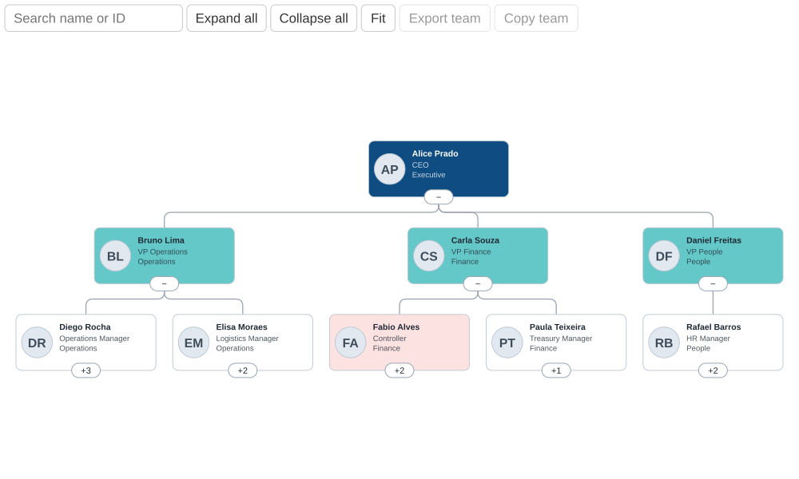
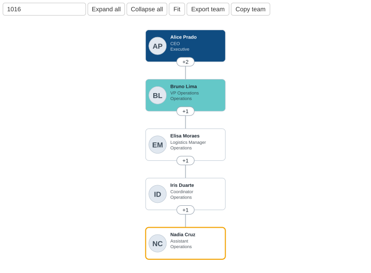
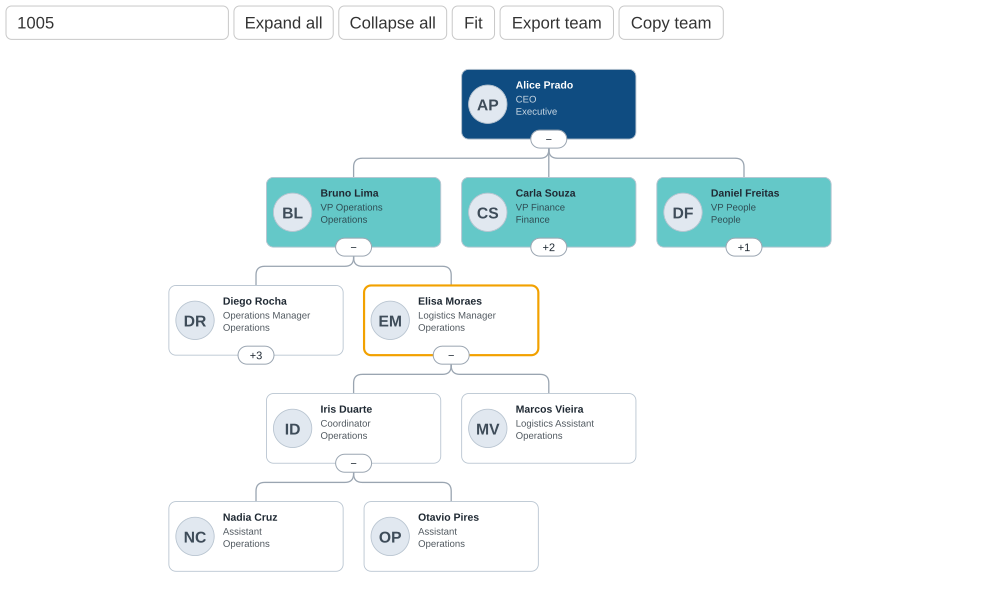
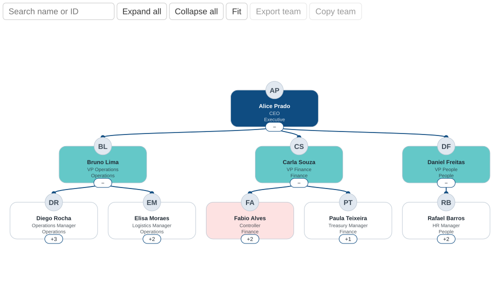

Your org chart,
inside Power BI.
A flat table, one row per person, becomes a vertical tree with expandable branches, reporting-line search, photos and cross-filtering. No license fees, and no data leaves your report.
MIT license · v1.2.0 · works in Power BI Desktop.
Built for real trees.
Vertical tree
Rounded, straight or curved connectors. Choose how many levels start open.
Expand / collapse
Per branch, plus Expand all, Collapse all and Fit.
Reporting-line search
Search by ID or name and see the person and every manager above them. Exact ID match wins.
Export / Copy team
Save a CSV or copy the list: the searched person and everyone below, at every level.
Cross-filtering
Click cards to filter other visuals. Ctrl or Shift for multiple selection.
Avatars & colors
Photo by link, base64 or automatic initials. Colors from your data, with automatic text contrast.
Zoom & pan
Mouse wheel and drag. The toolbar scales with the visual and browser zoom.
Forgiving data
Managers without a row, several top-level people, duplicate IDs and loops are handled gracefully.
See it in action.




One row per person.
An empty Manager ID, or one equal to the person's own ID, marks the top of the tree.
Employee ID
Unique identifier of the person.
Manager ID
ID of the direct manager.
Employee name / Manager name
Names shown on cards and used by search.
Card details
One or more extra lines, such as title and department.
Image URL
HTTPS link, base64 data, or empty for initials.
Card color
A column of CSS colors.
Ready in four steps.
Download
Get OrganogramaByDevEduNunes.pbiviz from the Releases page.
Import
In Power BI Desktop: Visualizations pane, the ⋯ menu, Import a visual from a file.
Map fields
Add the visual to a report and drag in Employee ID and Manager ID.
Format
Open Format visual for layout, cards, avatar, colors, connectors and export.
Your data stays yours.
Security
- Runs inside the Power BI sandbox, with no telemetry and no network calls of its own.
- Data text renders as plain text, never HTML.
- Only HTTPS links and PNG, JPEG, GIF or WebP data are accepted as images.
- Exported CSV cells that could read as formulas get a leading quote.
Limits
- Loads up to 30,000 rows.
- Base64 thumbnails: about 80×80 px and under 20 KB.
- HTTPS image links load only if they open without signing in. Photos behind a login, like SharePoint, will not show.
- Loops are broken automatically, but should be fixed at the source.
Roadmap
- Unit tests for the tree builder
- Horizontal layout and assistant nodes
- Tooltips, dark theme and high contrast
- Export to image and more languages
Chart your
company.
Free, MIT licensed. Contributions are welcome: see CONTRIBUTING.md.